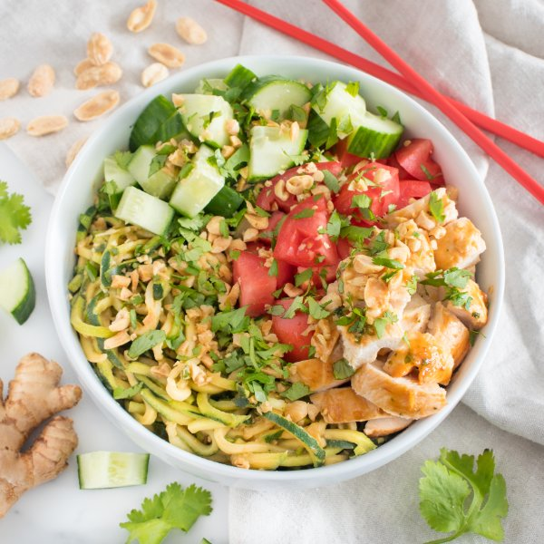

Chicken Satay Bowl with Peanut-Zucchini Noodles, Cucumber & Tomato

Prep Time
35 min
Nutrition (per serving)
576.2 kcalCalories
56.5 gProtein
23.3 gCarbs
30 gFat
Full nutrition table
| Calories | 576.2 kcal |
| Total fat | 30 g |
| Saturated fat | 5.6 g |
| Trans fat | 0.1 g |
| Cholesterol | 213.2 mg |
| Sodium | 249.4 mg |
| Carbohydrates | 23.3 g |
| Fiber | 6.9 g |
| Sugars | 10.2 g |
| Protein | 56.5 g |
| Potassium | 1748.4 mg |
| Calcium | 109.9 mg |
| Iron | 4.2 mg |
| Vitamin A | 1082.6 IU |
| Vitamin C | 59.6 mg |
| Vitamin D | 2.3 IU |
Cookware
Ingredients
- 2 lbchicken thighs, boneless skinless
- 1 small bunchcilantro
- 1English cucumber
- 4 clovesgarlic
- 2 (1 inch) piecesginger root
- 2limes
- ¼ cuppeanuts, roasted unsalted
- 2tomatoes
- 4 mediumzucchini squash
- chili-garlic sauce
- natural peanut butter
- rice vinegar
- soy sauce
- toasted sesame oil
Steps
- Preheat oven to 425°F. Coat a baking sheet pan with a thin layer of oil.2 tsp toasted sesame oil
- Wash and dry the fresh produce.1 small bunch cilantro
2 limes
4 medium zucchini squash
1 English cucumber
2 tomatoes - Peel and mince garlic and ginger. Place both in a medium bowl.4 cloves garlic
2 (1 inch) pieces ginger root - Shave cilantro leaves off the stems; discard stems and mince the leaves. Add half to the bowl (reserving the rest for garnish).
- Juice limes into the bowl. Add peanut butter, soy sauce, vinegar, and chili-garlic sauce; whisk to combine the sauce.¼ cup natural peanut butter
¼ cup soy sauce
2 tbsp rice vinegar
4 tsp chili-garlic sauce - Pat the chicken thighs dry with paper towels, cut into bite-sized pieces, and place on the baking sheet. Spoon half of the sauce over the chicken, toss to coat, and spread out in an even layer. (Reserve remaining sauce for later.)2 lb chicken thighs, boneless skinless
- Place chicken in the oven and bake until golden brown and cooked through, about 12 minutes. Remove from oven.
- Meanwhile, trim zucchini ends and use a julienne (or regular) peeler to make noodles.
- Preheat a large skillet over medium-high heat.
- Once the skillet is hot, add oil and swirl to coat the bottom. Add zucchini and remaining sauce; cook, stirring constantly, until just tender, 2-3 minutes. Remove from heat.4 tsp toasted sesame oil
- Trim and large dice cucumber. Large dice tomatoes; set both aside on a plate.
- Roughly chop peanuts.¼ cup peanuts, roasted unsalted
- To serve, divide zucchini noodles between bowls; top with chicken, veggies, peanuts, and reserved cilantro. Enjoy!